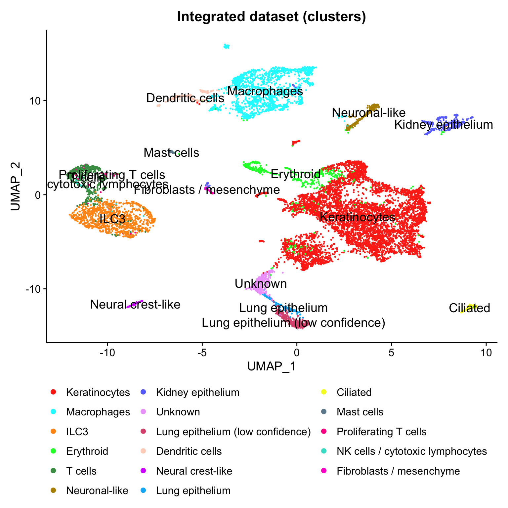
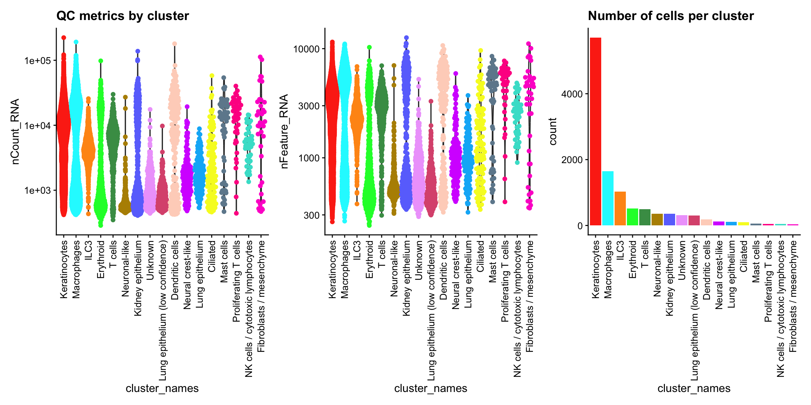
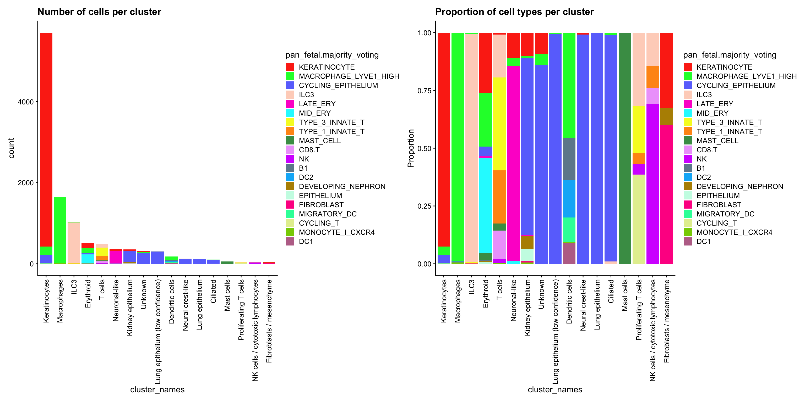
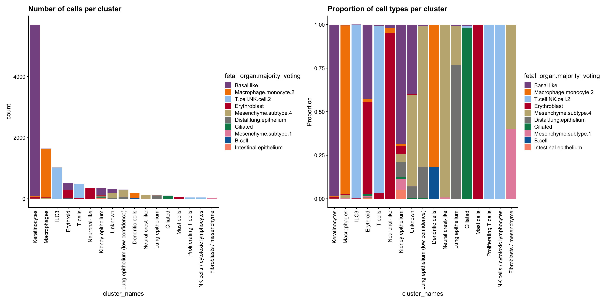
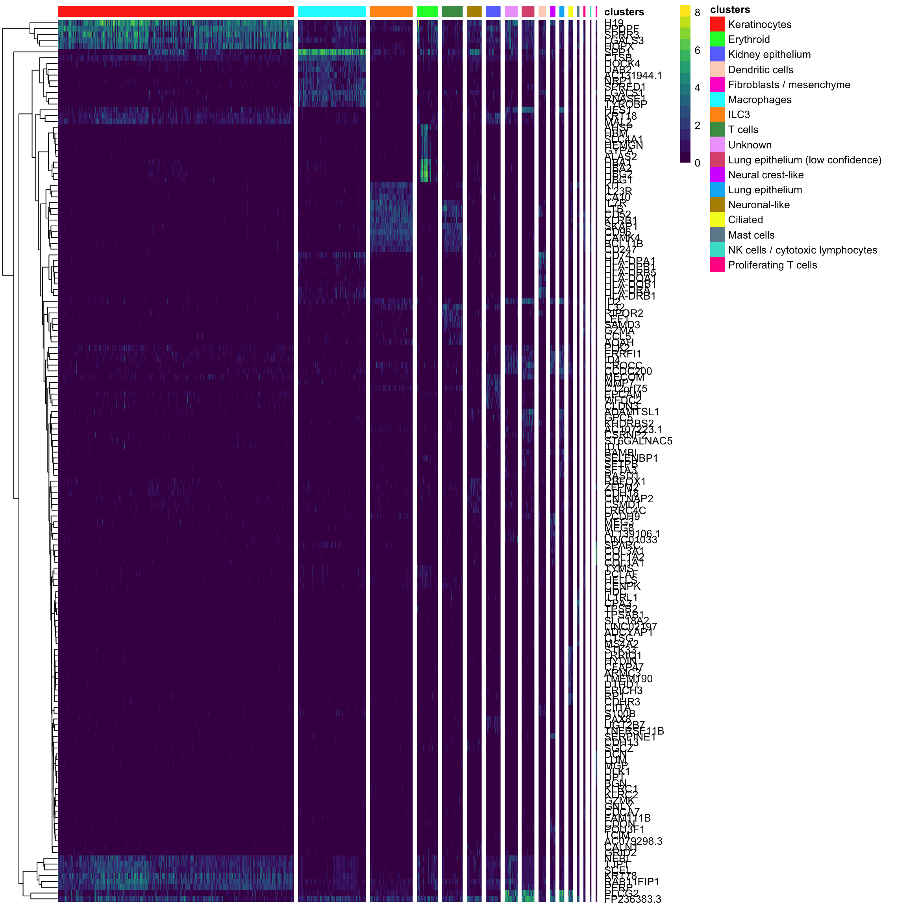
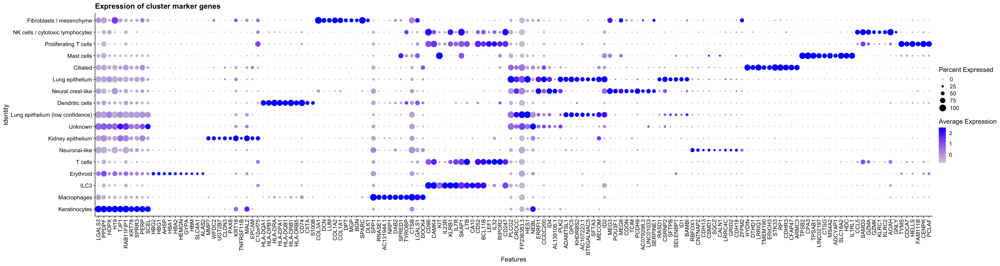
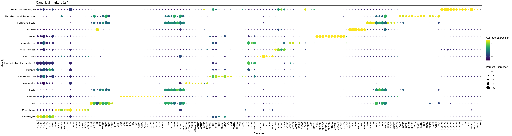
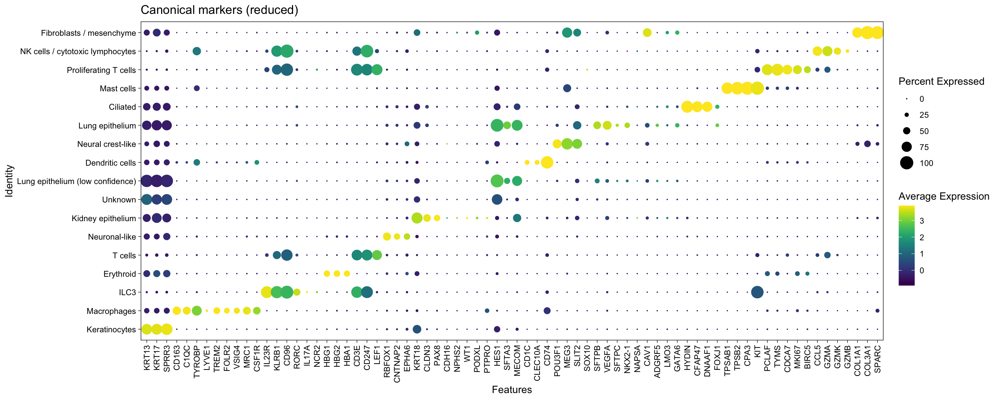

Last updated: 2026-10-13
Checks: 7 0
Knit directory: amniosinglecell/
This reproducible R Markdown analysis was created with workflowr (version 1.7.2). The Checks tab describes the reproducibility checks that were applied when the results were created. The Past versions tab lists the development history.
Great! Since the R Markdown file has been committed to the Git repository, you know the exact version of the code that produced these results.
Great job! The global environment was empty. Objects defined in the global environment can affect the analysis in your R Markdown file in unknown ways. For reproduciblity it’s best to always run the code in an empty environment.
The command set.seed(20220125) was run prior to running
the code in the R Markdown file. Setting a seed ensures that any results
that rely on randomness, e.g. subsampling or permutations, are
reproducible.
Great job! Recording the operating system, R version, and package versions is critical for reproducibility.
Nice! There were no cached chunks for this analysis, so you can be confident that you successfully produced the results during this run.
Great job! Using relative paths to the files within your workflowr project makes it easier to run your code on other machines.
Great! You are using Git for version control. Tracking code development and connecting the code version to the results is critical for reproducibility.
The results in this page were generated with repository version fe38129. See the Past versions tab to see a history of the changes made to the R Markdown and HTML files.
Note that you need to be careful to ensure that all relevant files for
the analysis have been committed to Git prior to generating the results
(you can use wflow_publish or
wflow_git_commit). workflowr only checks the R Markdown
file, but you know if there are other scripts or data files that it
depends on. Below is the status of the Git repository when the results
were generated:
Ignored files:
Ignored: .DS_Store
Ignored: .Rhistory
Ignored: .Rproj.user/
Ignored: analysis/generate_site.R
Ignored: analysis/knit_docs.R
Ignored: analysis/run_as_job.R
Ignored: analysis/sccomp_draws_files/
Ignored: celltypist/.DS_Store
Ignored: data/
Ignored: excluded_analysis/
Ignored: output/
Ignored: renv/.DS_Store
Ignored: renv/library/
Ignored: renv/staging/
Ignored: sccomp_draws_files/
Untracked files:
Untracked: AmnioSC_Manuscript_Claude/
Untracked: claude_log/
Note that any generated files, e.g. HTML, png, CSS, etc., are not included in this status report because it is ok for generated content to have uncommitted changes.
These are the previous versions of the repository in which changes were
made to the R Markdown
(analysis/AmnioSC_workflow_optref_cluster_marker_gene_analysis.Rmd)
and HTML
(docs/AmnioSC_workflow_optref_cluster_marker_gene_analysis.html)
files. If you’ve configured a remote Git repository (see
?wflow_git_remote), click on the hyperlinks in the table
below to view the files as they were in that past version.
| File | Version | Author | Date | Message |
|---|---|---|---|---|
| Rmd | fe38129 | Calandra Grima | 2026-10-13 | wflow_publish(here("analysis", "AmnioSC_workflow_optref_cluster_marker_gene_analysis.Rmd")) |
| html | c705f9b | Calandra Grima | 2026-09-24 | Build site. |
| Rmd | ab67e6b | Calandra Grima | 2026-09-24 | wflow_publish(here("analysis", "AmnioSC_workflow_optref_cluster_marker_gene_analysis.Rmd")) |
| html | 5efb11b | Calandra Grima | 2026-09-16 | Build site. |
| Rmd | a82f90c | Calandra Grima | 2026-09-16 | wflow_publish(here("analysis", "AmnioSC_workflow_optref_cluster_marker_gene_analysis.Rmd")) |
| html | 5aeed7c | Calandra Grima | 2026-08-05 | Build site. |
| Rmd | 14362ff | Calandra Grima | 2026-08-05 | wflow_publish(here("analysis", "AmnioSC_workflow_optref_cluster_marker_gene_analysis.Rmd")) |
| html | c2d4d2a | Calandra Grima | 2026-08-05 | Build site. |
| Rmd | 4f81c3f | Calandra Grima | 2026-08-05 | wflow_publish(here("analysis", "AmnioSC_workflow_optref_cluster_marker_gene_analysis.Rmd")) |
| html | c7ba1c7 | Calandra Grima | 2026-08-05 | Build site. |
| Rmd | c5c97cd | Calandra Grima | 2026-08-05 | wflow_publish(here("analysis", "AmnioSC_workflow_optref_cluster_marker_gene_analysis.Rmd")) |
| html | 7a7b471 | Calandra Grima | 2026-08-05 | Build site. |
| html | f7fb870 | Calandra Grima | 2026-08-04 | Build site. |
| html | 1471266 | Calandra Grima | 2026-08-04 | Build site. |
| html | dcfc95f | Calandra Grima | 2026-08-04 | Build site. |
| Rmd | f912871 | Calandra Grima | 2026-08-04 | wflow_publish(here("analysis", "AmnioSC_workflow_optref_cluster_marker_gene_analysis.Rmd")) |
| html | e740625 | calandra.grima | 2026-04-29 | Build site. |
| Rmd | 11bf2c7 | calandra.grima | 2026-04-29 | wflow_publish(here("analysis", "AmnioSC_workflow_optref_cluster_marker_gene_analysis.Rmd")) |
| html | c69abd6 | calandra.grima | 2026-02-06 | Build site. |
| html | f394355 | calandra.grima | 2026-02-06 | Build site. |
| Rmd | ead0254 | calandra.grima | 2026-02-06 | wflow_publish(here("analysis", "AmnioSC_workflow_optref_cluster_marker_gene_analysis.Rmd")) |
| Rmd | 7cfb45a | Calandra Grima | 2026-02-03 | Commit files for migration to local |
| html | 13ed75c | Calandra Grima | 2025-11-21 | Build site. |
| html | e1e5539 | Calandra Grima | 2025-11-14 | Build site. |
| Rmd | 028e2dd | Calandra Grima | 2025-11-14 | Update analysis workflow to use new clustering approach |
| html | d4f2bf9 | Calandra Grima | 2025-11-12 | Build site. |
| Rmd | aea88e8 | Calandra Grima | 2025-11-12 | wflow_publish(here("analysis", "AmnioSC_workflow_optref_cluster_marker_gene_analysis.Rmd")) |
| html | 488e4df | Calandra Grima | 2025-04-11 | Build site. |
| html | 53c7407 | Calandra Grima | 2025-04-03 | Build site. |
| html | 26c55dd | Calandra Grima | 2025-04-02 | Build site. |
| Rmd | 767cc78 | Calandra Grima | 2025-04-02 | wflow_publish(here("analysis", "AmnioSC_workflow_optref_cluster_marker_gene_analysis.Rmd")) |
| html | 8411a2f | Calandra Grima | 2025-03-28 | Build site. |
| html | fc04588 | Calandra Grima | 2025-03-28 | Build site. |
| html | 9471746 | Calandra Grima | 2025-03-27 | Build site. |
| html | 7f44f9a | Calandra Grima | 2025-03-25 | Build site. |
| Rmd | 65b9c8f | Calandra Grima | 2025-03-25 | wflow_publish(here("analysis", "AmnioSC_workflow_optref_cluster_marker_gene_analysis.Rmd")) |
| html | a534cd5 | Calandra Grima | 2025-02-05 | Build site. |
| Rmd | bbf50a7 | Calandra Grima | 2025-02-05 | wflow_publish(here("analysis", "AmnioSC_workflow_optref_cluster_marker_gene_analysis.Rmd")) |
| html | a7abff0 | Calandra Grima | 2025-01-24 | Build site. |
| Rmd | a81bd7a | Calandra Grima | 2025-01-24 | wflow_publish(here("analysis", "AmnioSC_workflow_optref_cluster_marker_gene_analysis.Rmd")) |
| html | 158f1e8 | Calandra Grima | 2025-01-15 | Build site. |
| Rmd | 13b7dbe | Calandra Grima | 2025-01-15 | wflow_publish(here("analysis", "AmnioSC_workflow_optref_cluster_marker_gene_analysis.Rmd")) |
| html | 8a4ae40 | Calandra Grima | 2024-07-17 | Build site. |
| Rmd | a578879 | Calandra Grima | 2024-07-17 | wflow_publish(here("analysis", "AmnioSC_workflow_optref_cluster_marker_gene_analysis.Rmd")) |
| html | 4bbafb1 | Calandra Grima | 2024-06-19 | Build site. |
| Rmd | 40a27d4 | Calandra Grima | 2024-06-19 | wflow_publish(here("analysis", "AmnioSC_workflow_optref_cluster_marker_gene_analysis.Rmd")) |
| Rmd | 32b16f8 | Calandra Grima | 2024-06-19 | Change rerun flag back to FALSE |
| Rmd | 49abc78 | Calandra Grima | 2024-05-29 | wflow_publish(here("analysis", "AmnioSC_workflow_optref_cluster_marker_gene_analysis.Rmd")) |
| Rmd | 98cf8c8 | Calandra Grima | 2024-03-06 | wflow_publish(here("analysis", "AmnioSC_workflow_optref_cluster_marker_gene_analysis.Rmd")) |
| html | 0c44277 | Calandra Grima | 2024-03-06 | Build site. |
| Rmd | eb6abb5 | Calandra Grima | 2024-03-06 | wflow_publish(here("analysis", "AmnioSC_workflow_optref_cluster_marker_gene_analysis.Rmd")) |
| html | 69ec0da | Calandra Grima | 2024-02-15 | Build site. |
| Rmd | a2fc3f2 | Calandra Grima | 2024-02-15 | wflow_publish(here("analysis", "AmnioSC_workflow_optref_cluster_marker_gene_analysis.Rmd")) |
| html | e86a657 | Calandra Grima | 2024-01-16 | Build site. |
| Rmd | d315ad3 | Calandra Grima | 2024-01-16 | wflow_publish(here("analysis", "AmnioSC_workflow_optref_cluster_marker_gene_analysis.Rmd")) |
| html | 1caf914 | Calandra Grima | 2024-01-16 | Build site. |
| html | 7630c39 | Calandra Grima | 2024-01-16 | Build site. |
| Rmd | 42f421e | Calandra Grima | 2024-01-16 | wflow_publish(here("analysis", "AmnioSC_workflow_optref_cluster_marker_gene_analysis.Rmd")) |
| Rmd | 00205b2 | Calandra Grima | 2024-01-11 | Update file naming scheme for optimised reference analysis |
| html | 00205b2 | Calandra Grima | 2024-01-11 | Update file naming scheme for optimised reference analysis |
library(Seurat)
library(SeuratObject)
library(limma)
library(edgeR)
library(org.Hs.eg.db)
library(GO.db)
library(pheatmap)
library(ggplot2)
library(ggbeeswarm)
library(viridis)
library(cowplot)
library(patchwork)
library(egg)
library(rmarkdown)
library(tidyr)
library(workflowr)
library(here)
library(tidyverse)
source(here("code", "helper_functions.R"))
source(here("code", "load_colour_schemes.R"))
RERUN_ALL <- FALSEseu_int <- readRDS(here("data", "workflow", "AmnioSC_ALL_optimised_ref.Refined_labels.Seurat.rds"))DimPlot(seu_int, reduction = 'umap', label = TRUE, label.size = 5,
group.by = "cluster_names") +
scale_colour_manual(values = CLUSTER_NAME_COLOURS) +
guides(color=guide_legend(ncol = 3, override.aes = list(size=2))) +
bottom_legend +
ggtitle("Integrated dataset (clusters)")Warning: `aes_string()` was deprecated in ggplot2 3.0.0.
ℹ Please use tidy evaluation idioms with `aes()`.
ℹ See also `vignette("ggplot2-in-packages")` for more information.
ℹ The deprecated feature was likely used in the Seurat package.
Please report the issue at <https://github.com/satijalab/seurat/issues>.
This warning is displayed once per session.
Call `lifecycle::last_lifecycle_warnings()` to see where this warning was
generated.
| Version | Author | Date |
|---|---|---|
| 5efb11b | Calandra Grima | 2026-09-16 |
| dcfc95f | Calandra Grima | 2026-08-04 |
| e1e5539 | Calandra Grima | 2025-11-14 |
| d4f2bf9 | Calandra Grima | 2025-11-12 |
| 488e4df | Calandra Grima | 2025-04-11 |
| 8411a2f | Calandra Grima | 2025-03-28 |
| 9471746 | Calandra Grima | 2025-03-27 |
| 7f44f9a | Calandra Grima | 2025-03-25 |
| a7abff0 | Calandra Grima | 2025-01-24 |
| 8a4ae40 | Calandra Grima | 2024-07-17 |
| 4bbafb1 | Calandra Grima | 2024-06-19 |
| 0c44277 | Calandra Grima | 2024-03-06 |
| 69ec0da | Calandra Grima | 2024-02-15 |
| 1caf914 | Calandra Grima | 2024-01-16 |
seu_int@meta.data %>%
ggplot(aes(x = cluster_names,
y = nCount_RNA)) +
geom_violin(scale = "area") +
geom_quasirandom(aes(color = cluster_names)) +
scale_y_log10() +
theme_cowplot(12) +
scale_colour_manual(values = CLUSTER_NAME_COLOURS) +
no_legend + rotate_x_labels +
ggtitle("QC metrics by cluster") -> p1
seu_int@meta.data %>%
ggplot(aes(x = cluster_names,
y = nFeature_RNA)) +
geom_violin(scale = "area") +
geom_quasirandom(aes(color = cluster_names)) +
scale_y_log10() +
theme_cowplot(12) + rotate_x_labels +
scale_colour_manual(values = CLUSTER_NAME_COLOURS) +
no_legend -> p2
p3 <- seu_int@meta.data %>%
ggplot(aes(x = cluster_names,
fill = cluster_names)) +
geom_bar() +
theme_cowplot(12) + rotate_x_labels + no_legend +
scale_fill_manual(values = CLUSTER_NAME_COLOURS) +
ggtitle("Number of cells per cluster")
p1 | p2 | p3
| Version | Author | Date |
|---|---|---|
| 5efb11b | Calandra Grima | 2026-09-16 |
| dcfc95f | Calandra Grima | 2026-08-04 |
| f394355 | calandra.grima | 2026-02-06 |
| e1e5539 | Calandra Grima | 2025-11-14 |
| d4f2bf9 | Calandra Grima | 2025-11-12 |
| 488e4df | Calandra Grima | 2025-04-11 |
| 8411a2f | Calandra Grima | 2025-03-28 |
| 9471746 | Calandra Grima | 2025-03-27 |
| 7f44f9a | Calandra Grima | 2025-03-25 |
| a7abff0 | Calandra Grima | 2025-01-24 |
| 8a4ae40 | Calandra Grima | 2024-07-17 |
| 4bbafb1 | Calandra Grima | 2024-06-19 |
| 0c44277 | Calandra Grima | 2024-03-06 |
| 69ec0da | Calandra Grima | 2024-02-15 |
| 1caf914 | Calandra Grima | 2024-01-16 |
p1 <- seu_int@meta.data %>%
ggplot(aes(x = cluster_names,
fill = pan_fetal.majority_voting)) +
geom_bar() +
theme_cowplot(12) + rotate_x_labels +
scale_fill_manual(values = ALL_CELL_TYPE_COLOURS[levels(seu_int$pan_fetal.majority_voting)]) +
ggtitle("Number of cells per cluster")
p2 <- seu_int@meta.data %>%
ggplot(aes(x = cluster_names,
fill = pan_fetal.majority_voting)) +
geom_bar(position="fill") +
theme_cowplot(12) +
ylab("Proportion") + rotate_x_labels +
scale_fill_manual(values = ALL_CELL_TYPE_COLOURS[levels(seu_int$pan_fetal.majority_voting)]) +
guides(fill=guide_legend(ncol = 1)) +
ggtitle("Proportion of cell types per cluster")
p1 | p2
| Version | Author | Date |
|---|---|---|
| 5efb11b | Calandra Grima | 2026-09-16 |
| 7a7b471 | Calandra Grima | 2026-08-05 |
| 1471266 | Calandra Grima | 2026-08-04 |
| dcfc95f | Calandra Grima | 2026-08-04 |
| f394355 | calandra.grima | 2026-02-06 |
| e1e5539 | Calandra Grima | 2025-11-14 |
| d4f2bf9 | Calandra Grima | 2025-11-12 |
| 488e4df | Calandra Grima | 2025-04-11 |
| 8411a2f | Calandra Grima | 2025-03-28 |
| 9471746 | Calandra Grima | 2025-03-27 |
| 7f44f9a | Calandra Grima | 2025-03-25 |
| a7abff0 | Calandra Grima | 2025-01-24 |
| 8a4ae40 | Calandra Grima | 2024-07-17 |
| 4bbafb1 | Calandra Grima | 2024-06-19 |
| 0c44277 | Calandra Grima | 2024-03-06 |
| 69ec0da | Calandra Grima | 2024-02-15 |
| 1caf914 | Calandra Grima | 2024-01-16 |
p1 <- seu_int@meta.data %>%
ggplot(aes(x = cluster_names,
fill = fetal_organ.majority_voting)) +
geom_bar() +
theme_cowplot(12) + rotate_x_labels +
scale_fill_manual(values = ALL_CELL_TYPE_COLOURS[levels(seu_int$fetal_organ.majority_voting)]) +
ggtitle("Number of cells per cluster")
p2 <- seu_int@meta.data %>%
ggplot(aes(x = cluster_names,
fill = fetal_organ.majority_voting)) +
geom_bar(position="fill") +
theme_cowplot(12) +
ylab("Proportion") + rotate_x_labels +
scale_fill_manual(values = ALL_CELL_TYPE_COLOURS[levels(seu_int$fetal_organ.majority_voting)]) +
guides(fill=guide_legend(ncol = 1)) +
ggtitle("Proportion of cell types per cluster")
p1 | p2
| Version | Author | Date |
|---|---|---|
| 5efb11b | Calandra Grima | 2026-09-16 |
| 7a7b471 | Calandra Grima | 2026-08-05 |
| dcfc95f | Calandra Grima | 2026-08-04 |
| f394355 | calandra.grima | 2026-02-06 |
| e1e5539 | Calandra Grima | 2025-11-14 |
| d4f2bf9 | Calandra Grima | 2025-11-12 |
| 488e4df | Calandra Grima | 2025-04-11 |
| 8411a2f | Calandra Grima | 2025-03-28 |
| 9471746 | Calandra Grima | 2025-03-27 |
| 7f44f9a | Calandra Grima | 2025-03-25 |
| a7abff0 | Calandra Grima | 2025-01-24 |
| 8a4ae40 | Calandra Grima | 2024-07-17 |
counts <- as.matrix(seu_int[["RNA"]]@counts)Warning in asMethod(object): sparse->dense coercion: allocating vector of size
3.1 GiBsample <- seu_int$Sample
clusters <- seu_int$refined_clusters
# clustgrp <- paste0("cluster_", clusters)
clustgrp <- factor(clusters, levels = levels(seu_int$refined_clusters))
fit.cont <- findMarkerGenes(counts, clustgrp, sample)
summary(decideTests(fit.cont)) Cluster_01 Cluster_02 Cluster_03 Cluster_04 Cluster_05 Cluster_06
Down 11859 8029 2791 2016 611 7136
NotSig 18845 25934 27475 28292 33438 22473
Up 5566 2307 6004 5962 2221 6661
Cluster_07 Cluster_08 Cluster_09 Cluster_10 Cluster_11 Cluster_12
Down 7469 4939 10626 11322 5707 5810
NotSig 22797 24221 23836 22713 27029 27501
Up 6004 7110 1808 2235 3534 2959
Cluster_13 Cluster_14 Cluster_15 Cluster_16 Cluster_17
Down 10812 2953 983 697 554
NotSig 17537 29996 31888 33222 30946
Up 7921 3321 3399 2351 4770# picks genes above given logFC threshold
treat.all <- treat(fit.cont,lfc=0.5)
dt <- decideTests(treat.all)
summary(dt) Cluster_01 Cluster_02 Cluster_03 Cluster_04 Cluster_05 Cluster_06
Down 352 299 71 44 31 129
NotSig 35146 35854 35818 35676 35872 35228
Up 772 117 381 550 367 913
Cluster_07 Cluster_08 Cluster_09 Cluster_10 Cluster_11 Cluster_12
Down 183 105 610 818 238 323
NotSig 35295 35369 35552 35287 35622 35586
Up 792 796 108 165 410 361
Cluster_13 Cluster_14 Cluster_15 Cluster_16 Cluster_17
Down 1055 138 38 16 7
NotSig 35091 35578 35660 35802 35370
Up 124 554 572 452 893clusters_names <- levels(clusters)
cluster_markers_top10 <- extractMarkerGenes(treat.all, clusters_names)
cluster_markers_top20 <- extractMarkerGenes(treat.all, clusters_names,
n_markers=20)
cluster_markers_top50 <- extractMarkerGenes(treat.all, clusters_names,
n_markers=50)
saveRDS(cluster_markers_top10,
here("data", "workflow", "AmnioSC.cluster_markers_top10.rds"))
write.csv(cluster_markers_top10,
file = here("data", "workflow", "AmnioSC.cluster_markers_top10.csv"),
quote = FALSE)
write.csv(cluster_markers_top20,
file = here("data", "workflow", "AmnioSC.cluster_markers_top20.csv"),
quote = FALSE)
CLUSTER_NAMES <- readRDS(here("data", "workflow", "CLUSTER_NAMES.rds"))
cluster_markers_top20.named <- cluster_markers_top20
names(cluster_markers_top20.named) <- unname(CLUSTER_NAMES[names(cluster_markers_top20.named)])
write.csv(cluster_markers_top20.named,
file = here("data", "workflow", "AmnioSC.cluster_markers_top20.named.csv"),
quote = FALSE)
write.csv(cluster_markers_top20.named,
file = here("output", "supp_tables", "AmnioSC.cluster_markers_top20.named.csv"),
quote = FALSE)
cluster_markers_top10.named <- cluster_markers_top10
names(cluster_markers_top10.named) <- unname(CLUSTER_NAMES[names(cluster_markers_top10.named)])
paged_table(as.data.frame(cluster_markers_top10.named))annotation_df <- data.frame(clusters = seu_int$cluster_names,
cell = colnames(seu_int),
Sample = seu_int$Sample)
annotation_df <- annotation_df[order(annotation_df$clusters),]
annotation_colours <- list(clusters = CLUSTER_NAME_COLOURS)
cluster_markers_seu <- seu_int[unique(unname(unlist(cluster_markers_top10))), annotation_df$cell]pheatmap(GetAssayData(cluster_markers_seu, "data"), show_colnames = FALSE,
color = viridis(14), annotation_col = annotation_df[, "clusters", drop=FALSE],
annotation_colors = annotation_colours["clusters"],
cluster_cols = FALSE, cluster_rows = TRUE,
gaps_col = cumsum(table(cluster_markers_seu$cluster_names)))
| Version | Author | Date |
|---|---|---|
| 5efb11b | Calandra Grima | 2026-09-16 |
| dcfc95f | Calandra Grima | 2026-08-04 |
| e1e5539 | Calandra Grima | 2025-11-14 |
| d4f2bf9 | Calandra Grima | 2025-11-12 |
| 8a4ae40 | Calandra Grima | 2024-07-17 |
| 4bbafb1 | Calandra Grima | 2024-06-19 |
| 0c44277 | Calandra Grima | 2024-03-06 |
| 69ec0da | Calandra Grima | 2024-02-15 |
| 1caf914 | Calandra Grima | 2024-01-16 |
DotPlot(object = seu_int, features = unique(unlist(cluster_markers_top10)),
group.by = "cluster_names") +
rotate_x_labels +
ggtitle("Expression of cluster marker genes")
| Version | Author | Date |
|---|---|---|
| 5efb11b | Calandra Grima | 2026-09-16 |
| dcfc95f | Calandra Grima | 2026-08-04 |
| f394355 | calandra.grima | 2026-02-06 |
| e1e5539 | Calandra Grima | 2025-11-14 |
| d4f2bf9 | Calandra Grima | 2025-11-12 |
| 488e4df | Calandra Grima | 2025-04-11 |
| fc04588 | Calandra Grima | 2025-03-28 |
| 9471746 | Calandra Grima | 2025-03-27 |
| 7f44f9a | Calandra Grima | 2025-03-25 |
| a7abff0 | Calandra Grima | 2025-01-24 |
| 8a4ae40 | Calandra Grima | 2024-07-17 |
| 4bbafb1 | Calandra Grima | 2024-06-19 |
| 0c44277 | Calandra Grima | 2024-03-06 |
| 69ec0da | Calandra Grima | 2024-02-15 |
| 1caf914 | Calandra Grima | 2024-01-16 |
cluster_go <- performGO(cluster_markers_top50, clusters_names) 'select()' returned 1:1 mapping between keys and columns
'select()' returned 1:1 mapping between keys and columns
'select()' returned 1:1 mapping between keys and columns
'select()' returned 1:1 mapping between keys and columns
'select()' returned 1:1 mapping between keys and columns
'select()' returned 1:1 mapping between keys and columns
'select()' returned 1:1 mapping between keys and columns
'select()' returned 1:1 mapping between keys and columns
'select()' returned 1:1 mapping between keys and columns
'select()' returned 1:1 mapping between keys and columns
'select()' returned 1:1 mapping between keys and columns
'select()' returned 1:1 mapping between keys and columns
'select()' returned 1:1 mapping between keys and columns
'select()' returned 1:1 mapping between keys and columns
'select()' returned 1:1 mapping between keys and columns
'select()' returned 1:1 mapping between keys and columns
'select()' returned 1:1 mapping between keys and columnscluster_go <- as.data.frame(cluster_go)
write.table(cluster_go, sep = "\t", row.names = F,
file = here("data", "workflow", "AmnioSC_optref.cluster_refined_go_top_10.tsv"),
quote = FALSE)
cluster_go.named <- cluster_go
names(cluster_go.named) <- unname(CLUSTER_NAMES[names(cluster_go.named)])
write.table(cluster_go.named, sep = "\t", row.names = F,
file = here("data", "workflow",
"AmnioSC_optref.cluster_refined_go_top_10.named.tsv"),
quote = FALSE)
write.table(cluster_go.named, sep = "\t", row.names = F,
file = here("output", "supp_tables",
"AmnioSC_optref.cluster_refined_go_top_10.named.tsv"),
quote = FALSE)paged_table(cluster_go.named)Known canonical markers for each cluster in the literature have been selected from the top 20 marker genes found above and also from our biological knowledge to be used in a dot plot. For Clusters 16 and 17, which were found via subclustering the T cells, marker genes from that analysis have also been considered as that analysis is more focused towards these immune subtypes.
AmnioSC.canonical_markers.all <- readRDS(here("data", "workflow", "AmnioSC.canonical_markers.all.rds"))
AmnioSC.canonical_markers.all <- AmnioSC.canonical_markers.all[levels(seu_int$cluster_names)]
canonical_markers.all <- unique(unlist(AmnioSC.canonical_markers.all, use.names = FALSE))
canonical_markers.all <- filterPresentGenes(canonical_markers.all, seu_int)DotPlot(object = seu_int, features = canonical_markers.all, assay = "SCT",
group.by = "cluster_names", col.max = 5) +
ggtitle("Canonical markers (all)") +
theme_linedraw() + rotate_x_labels +
scale_color_viridis(option = "viridis", direction = 1) +
theme(panel.grid = element_blank())Warning: Could not find IL22 in the default search locations, found in RNA
assay insteadWarning: Could not find FOXD3 in the default search locations, found in RNA
assay insteadScale for colour is already present.
Adding another scale for colour, which will replace the existing scale.
| Version | Author | Date |
|---|---|---|
| 5efb11b | Calandra Grima | 2026-09-16 |
AmnioSC.canonical_markers.reduced <- readRDS(here("data", "workflow", "AmnioSC.canonical_markers.reduced.rds"))
AmnioSC.canonical_markers.reduced <- AmnioSC.canonical_markers.reduced[levels(seu_int$cluster_names)]
canonical_markers.reduced <- unique(unlist(AmnioSC.canonical_markers.reduced, use.names = FALSE))
canonical_markers.reduced <- filterPresentGenes(canonical_markers.reduced, seu_int)DotPlot(object = seu_int, features = canonical_markers.reduced, assay = "SCT",
group.by = "cluster_names", col.max = 5) +
ggtitle("Canonical markers (reduced)") +
theme_linedraw() + rotate_x_labels +
scale_color_viridis(option = "viridis", direction = 1) +
theme(panel.grid = element_blank())Scale for colour is already present.
Adding another scale for colour, which will replace the existing scale.
| Version | Author | Date |
|---|---|---|
| c705f9b | Calandra Grima | 2026-09-24 |
| 5efb11b | Calandra Grima | 2026-09-16 |
| 7f44f9a | Calandra Grima | 2025-03-25 |
| a7abff0 | Calandra Grima | 2025-01-24 |
| 158f1e8 | Calandra Grima | 2025-01-15 |
| 8a4ae40 | Calandra Grima | 2024-07-17 |
| 0c44277 | Calandra Grima | 2024-03-06 |
| 69ec0da | Calandra Grima | 2024-02-15 |
| 1caf914 | Calandra Grima | 2024-01-16 |
# Prepare the MSigDB C8 (cell type signature) gene sets, if not already saved
if (!file.exists(here("data", "workflow", "GSEA", "Hs.c8.all.v2026.1.entrez.rds"))) {
# Downloaded from here: https://www.gsea-msigdb.org/gsea/msigdb/download_file.jsp?filePath=/msigdb/release/2026.1.Hs/c8.all.v2026.1.Hs.entrez.gmt
c8.all.v2026.1.Hs.entrez <- qusage::read.gmt(here("data", "workflow", "GSEA", "c8.all.v2026.1.Hs.entrez.gmt"))
saveRDS(c8.all.v2026.1.Hs.entrez, here("data", "workflow", "GSEA", "Hs.c8.all.v2026.1.entrez.rds"))
}Hs.c8.all <- readRDS(here("data", "workflow", "GSEA", "Hs.c8.all.v2026.1.entrez.rds"))c8.all_clusters <- data.frame()
for (i in c(10, 12)) {
cluster <- colnames(fit.cont$t)[i]
# translate gene SYMBOLS to entrez gene IDs
gns <- AnnotationDbi::mapIds(org.Hs.eg.db::org.Hs.eg.db,
keys = rownames(fit.cont$t),
column = c("ENTREZID"),
keytype = "SYMBOL",
multiVals = "first")
gene_sets.id <- ids2indices(Hs.c8.all,
unname(gns[rownames(fit.cont$t)]))
# docs suggest this: https://web.mit.edu/~r/current/arch/i386_linux26/lib/R/library/limma/html/camera.html
statistic <- fit.cont$t[,i]
cam <- cameraPR(statistic, gene_sets.id)
cam$cluster <- cluster
cam <- cam %>% rownames_to_column("c8")
c8.all_clusters <- rbind(c8.all_clusters, cam)
}'select()' returned 1:many mapping between keys and columns
'select()' returned 1:many mapping between keys and columnsc8.all_clusters %>% filter(FDR < 0.05, Direction == "Up") %>%
group_by(cluster) %>%
slice_min(order_by = FDR, n = 5)# A tibble: 10 × 6
# Groups: cluster [2]
c8 NGenes Direction PValue FDR cluster
<chr> <dbl> <chr> <dbl> <dbl> <chr>
1 DESCARTES_MAIN_FETAL_BRONCHIOLAR_… 42 Up 5.88e-58 3.92e-56 Cluste…
2 DESCARTES_FETAL_LUNG_BRONCHIOLAR_… 58 Up 3.01e-40 9.29e-39 Cluste…
3 HE_LIM_SUN_FETAL_LUNG_C1_LATE_STA… 7 Up 4.40e-29 8.29e-28 Cluste…
4 HE_LIM_SUN_FETAL_LUNG_C1_AT1_CELL 42 Up 4.81e-19 5.21e-18 Cluste…
5 TRAVAGLINI_LUNG_SIGNALING_ALVEOLA… 69 Up 3.81e-16 3.27e-15 Cluste…
6 DESCARTES_MAIN_FETAL_BRONCHIOLAR_… 42 Up 2.62e-83 2.27e-80 Cluste…
7 DESCARTES_FETAL_LUNG_BRONCHIOLAR_… 58 Up 1.07e-52 4.62e-50 Cluste…
8 TRAVAGLINI_LUNG_SIGNALING_ALVEOLA… 69 Up 3.59e-31 2.22e-29 Cluste…
9 CUI_DEVELOPING_HEART_C5_VALVAR_CE… 201 Up 5.50e-30 2.65e-28 Cluste…
10 HE_LIM_SUN_FETAL_LUNG_C1_AT1_CELL 42 Up 5.94e-22 1.84e-20 Cluste…This supports Clusters 10 and 12 being lung cell clusters (Cluster 10 is the low confidence lung cluster).
sessioninfo::session_info()─ Session info ───────────────────────────────────────────────────────────────
setting value
version R version 4.5.0 (2025-04-11)
os macOS 26.7.1
system aarch64, darwin20
ui X11
language (EN)
collate en_US.UTF-8
ctype en_US.UTF-8
tz Australia/Melbourne
date 2026-10-13
pandoc 3.10 @ /Applications/RStudio.app/Contents/Resources/app/quarto/bin/tools/aarch64/ (via rmarkdown)
quarto 1.10.18 @ /Applications/RStudio.app/Contents/Resources/app/quarto/bin/quarto
─ Packages ───────────────────────────────────────────────────────────────────
! package * version date (UTC) lib source
P abind 1.4-8 2024-09-12 [?] RSPM
P AnnotationDbi * 1.72.0 2025-10-29 [?] Bioconduc~
P beachmat 2.26.0 2025-10-29 [?] Bioconduc~
P beeswarm 0.4.0 2021-06-01 [?] RSPM
P Biobase * 2.70.0 2025-10-29 [?] Bioconduc~
P BiocGenerics * 0.56.0 2025-10-29 [?] Bioconduc~
P BiocManager 1.30.27 2025-11-14 [?] RSPM
P BiocNeighbors 2.4.0 2025-10-29 [?] Bioconduc~
P BiocParallel 1.44.0 2025-10-29 [?] Bioconduc~
P BiocSingular 1.26.1 2025-11-17 [?] Bioconduc~
P Biostrings 2.78.0 2025-10-29 [?] Bioconduc~
P bit 4.6.0 2025-03-06 [?] RSPM
P bit64 4.6.0-1 2025-01-16 [?] RSPM
P blob 1.3.0 2026-01-14 [?] RSPM
P bluster 1.20.0 2025-10-29 [?] Bioconduc~
P bslib 0.10.0 2026-01-26 [?] RSPM
P cachem 1.1.0 2024-05-16 [?] RSPM
P callr 3.7.6 2024-03-25 [?] CRAN (R 4.5.0)
P cli 3.6.6 2026-04-09 [?] RSPM
P cluster 2.1.8.1 2025-03-12 [?] CRAN (R 4.5.0)
P codetools 0.2-20 2024-03-31 [?] CRAN (R 4.5.0)
colorspace 2.1-2 2025-09-22 [1] RSPM (R 4.5.0)
P cowplot * 1.2.0 2025-07-07 [?] RSPM
P crayon 1.5.3 2024-06-20 [?] RSPM
P data.table 1.18.2.1 2026-01-27 [?] RSPM
P DBI 1.2.3 2024-06-02 [?] RSPM
DelayedArray 0.36.1 2026-03-31 [1] https://bioc-release.r-universe.dev (R 4.5.3)
P deldir 2.0-4 2024-02-28 [?] RSPM
P digest 0.6.39 2025-11-19 [?] RSPM
dplyr * 1.2.0 2026-02-03 [1] RSPM (R 4.5.0)
P dqrng 0.4.1 2024-05-28 [?] CRAN (R 4.5.0)
P edgeR * 4.8.2 2025-12-23 [?] https://bioc-release.r-universe.dev (R 4.5.2)
P egg * 0.4.5 2019-07-13 [?] RSPM
P evaluate 1.0.5 2025-08-27 [?] RSPM
P farver 2.1.2 2024-05-13 [?] RSPM
P fastmap 1.2.0 2024-05-15 [?] RSPM
P fitdistrplus 1.2-6 2026-01-24 [?] RSPM
P forcats * 1.0.1 2025-09-25 [?] RSPM
P fs 2.1.0 2026-04-18 [?] RSPM
P future 1.69.0 2026-01-16 [?] RSPM
P future.apply 1.20.1 2025-12-09 [?] RSPM
P generics * 0.1.4 2025-05-09 [?] CRAN (R 4.5.0)
P GenomicRanges * 1.62.1 2025-12-08 [?] Bioconduc~
P getPass 0.2-4 2023-12-10 [?] CRAN (R 4.5.0)
P ggalluvial * 0.12.5 2023-02-22 [?] RSPM
P ggbeeswarm * 0.7.3 2025-11-29 [?] RSPM
P ggplot2 * 4.0.2 2026-02-03 [?] RSPM
P ggrepel 0.9.6 2024-09-07 [?] CRAN (R 4.5.0)
P ggridges 0.5.7 2025-08-27 [?] RSPM
P git2r 0.36.2 2025-03-29 [?] CRAN (R 4.5.0)
P globals 0.19.0 2026-02-02 [?] RSPM
P glue 1.8.0 2024-09-30 [?] RSPM
P GO.db * 3.22.0 2026-02-03 [?] Bioconductor
P goftest 1.2-3 2021-10-07 [?] CRAN (R 4.5.0)
P gridExtra * 2.3 2017-09-09 [?] RSPM
P gtable 0.3.6 2024-10-25 [?] RSPM
P here * 1.0.2 2025-09-15 [?] RSPM
P hms 1.1.4 2025-10-17 [?] RSPM
P htmltools 0.5.9 2025-12-04 [?] RSPM
P htmlwidgets 1.6.4 2023-12-06 [?] RSPM
P httpuv 1.6.16 2025-04-16 [?] CRAN (R 4.5.0)
P httr 1.4.7 2023-08-15 [?] RSPM
P ica 1.0-3 2022-07-08 [?] CRAN (R 4.5.0)
P igraph 2.2.1 2025-10-27 [?] RSPM
P IRanges * 2.44.0 2025-10-29 [?] Bioconduc~
P irlba 2.3.7 2026-01-30 [?] RSPM
P jquerylib 0.1.4 2021-04-26 [?] RSPM
P jsonlite 2.0.0 2025-03-27 [?] RSPM
P KEGGREST 1.50.0 2025-10-29 [?] Bioconduc~
P KernSmooth 2.23-26 2025-01-01 [?] CRAN (R 4.5.0)
P knitr 1.51 2025-12-20 [?] RSPM
P labeling 0.4.3 2023-08-29 [?] RSPM
P later 1.4.5 2026-01-08 [?] RSPM
P lattice 0.22-7 2025-04-02 [?] RSPM
P lazyeval 0.2.2 2019-03-15 [?] RSPM
leiden 0.4.3.1 2023-11-17 [1] RSPM (R 4.5.0)
P lifecycle 1.0.5 2026-01-08 [?] RSPM
P limma * 3.66.0 2025-10-29 [?] Bioconduc~
P listenv 0.10.0 2025-11-02 [?] RSPM
P lmtest 0.9-40 2022-03-21 [?] CRAN (R 4.5.0)
P locfit 1.5-9.12 2025-03-05 [?] RSPM
P lubridate * 1.9.4 2024-12-08 [?] RSPM
P magrittr 2.0.4 2025-09-12 [?] RSPM
P MASS 7.3-65 2025-02-28 [?] CRAN (R 4.5.0)
P Matrix 1.7-4 2025-08-28 [?] RSPM
P MatrixGenerics * 1.22.0 2025-10-29 [?] Bioconduc~
P matrixStats * 1.5.0 2025-01-07 [?] RSPM
P memoise 2.0.1 2021-11-26 [?] RSPM
P metapod 1.18.0 2025-10-29 [?] Bioconduc~
P mime 0.13 2025-03-17 [?] RSPM
P miniUI 0.1.2 2025-04-17 [?] CRAN (R 4.5.0)
P nlme 3.1-168 2025-03-31 [?] CRAN (R 4.5.0)
P org.Hs.eg.db * 3.22.0 2026-02-03 [?] Bioconductor
P otel 0.2.0 2025-08-29 [?] RSPM
P parallelly 1.46.1 2026-01-08 [?] RSPM
P patchwork * 1.3.2 2025-08-25 [?] RSPM
P pbapply 1.7-4 2025-07-20 [?] RSPM
P pheatmap * 1.0.13 2025-06-05 [?] RSPM
P pillar 1.11.1 2025-09-17 [?] RSPM
P pkgconfig 2.0.3 2019-09-22 [?] RSPM
P plotly 4.12.0 2026-01-24 [?] RSPM
P plyr 1.8.9 2023-10-02 [?] RSPM
P png 0.1-8 2022-11-29 [?] RSPM
P Polychrome * 1.5.4 2025-04-06 [?] RSPM
P polyclip 1.10-7 2024-07-23 [?] CRAN (R 4.5.0)
P processx 3.8.6 2025-02-21 [?] CRAN (R 4.5.0)
P progressr 0.18.0 2025-11-06 [?] RSPM
P promises 1.5.0 2025-11-01 [?] RSPM
P ps 1.9.1 2025-04-12 [?] CRAN (R 4.5.0)
P purrr * 1.2.1 2026-01-09 [?] RSPM
P R6 2.6.1 2025-02-15 [?] RSPM
P RANN 2.6.2 2024-08-25 [?] CRAN (R 4.5.0)
P RColorBrewer 1.1-3 2022-04-03 [?] RSPM
P Rcpp 1.1.1 2026-01-10 [?] RSPM
P RcppAnnoy 0.0.23 2026-01-12 [?] RSPM
P readr * 2.1.6 2025-11-14 [?] RSPM
P renv 1.1.7 2026-01-27 [?] RSPM
P reshape2 * 1.4.5 2025-11-12 [?] RSPM
P reticulate 1.44.1 2025-11-14 [?] RSPM
P rlang 1.2.0 2026-04-06 [?] RSPM
P rmarkdown * 2.30 2025-09-28 [?] RSPM
P ROCR 1.0-12 2026-01-23 [?] RSPM
P rprojroot 2.1.1 2025-08-26 [?] RSPM
P RSQLite 2.4.5 2025-11-30 [?] RSPM
P rstudioapi 0.18.0 2026-01-16 [?] RSPM
P rsvd 1.0.5 2021-04-16 [?] RSPM
P Rtsne 0.17 2023-12-07 [?] CRAN (R 4.5.0)
P S4Arrays 1.10.1 2025-12-08 [?] Bioconduc~
S4Vectors * 0.48.1 2026-04-04 [1] https://bioc-release.r-universe.dev (R 4.5.3)
P S7 0.2.1 2025-11-14 [?] RSPM
P sass 0.4.10 2025-04-11 [?] RSPM
P ScaledMatrix 1.18.0 2025-10-29 [?] Bioconduc~
P scales 1.4.0 2025-04-24 [?] RSPM
P scattermore 1.2 2023-06-12 [?] CRAN (R 4.5.0)
P scatterplot3d 0.3-44 2023-05-05 [?] RSPM
P scran * 1.38.0 2025-10-29 [?] Bioconduc~
P sctransform 0.4.3 2026-01-10 [?] RSPM
P scuttle * 1.20.0 2025-10-29 [?] Bioconduc~
P Seqinfo * 1.0.0 2025-10-29 [?] Bioconduc~
P sessioninfo 1.2.3 2025-02-05 [?] RSPM
Seurat * 4.4.0 2024-01-10 [1] https://satijalab.r-universe.dev (R 4.5.0)
SeuratObject * 4.1.4 2023-09-27 [1] https://satijalab.r-universe.dev (R 4.5.0)
P shiny 1.12.1 2025-12-09 [?] RSPM
P SingleCellExperiment * 1.32.0 2025-10-29 [?] Bioconduc~
P sp 2.2-0 2025-02-01 [?] CRAN (R 4.5.0)
P SparseArray 1.10.8 2025-12-18 [?] Bioconduc~
P spatstat.data 3.1-9 2025-10-18 [?] RSPM
P spatstat.explore 3.7-0 2026-01-22 [?] RSPM
P spatstat.geom 3.7-0 2026-01-20 [?] RSPM
P spatstat.random 3.4-4 2026-01-21 [?] RSPM
P spatstat.sparse 3.1-0 2024-06-21 [?] CRAN (R 4.5.0)
P spatstat.univar 3.1-6 2026-01-17 [?] RSPM
P spatstat.utils 3.2-1 2026-01-10 [?] RSPM
P statmod 1.5.1 2025-10-09 [?] RSPM
P stringi 1.8.7 2025-03-27 [?] RSPM
P stringr * 1.6.0 2025-11-04 [?] RSPM
P SummarizedExperiment * 1.40.0 2025-10-29 [?] Bioconduc~
P survival 3.8-6 2026-01-16 [?] RSPM
P tensor 1.5.1 2025-06-17 [?] RSPM
P tibble * 3.3.1 2026-01-11 [?] RSPM
P tidyr * 1.3.2 2025-12-19 [?] RSPM
P tidyselect 1.2.1 2024-03-11 [?] RSPM
P tidyverse * 2.0.0 2023-02-22 [?] RSPM
P timechange 0.4.0 2026-01-29 [?] RSPM
P tzdb 0.5.0 2025-03-15 [?] RSPM
P utf8 1.2.6 2025-06-08 [?] RSPM
P uwot 0.2.4 2025-11-10 [?] RSPM
P vctrs 0.7.1 2026-01-23 [?] RSPM
P vipor 0.4.7 2023-12-18 [?] RSPM
P viridis * 0.6.5 2024-01-29 [?] RSPM
P viridisLite * 0.4.2 2023-05-02 [?] RSPM
P whisker 0.4.1 2022-12-05 [?] CRAN (R 4.5.0)
P withr 3.0.2 2024-10-28 [?] RSPM
P workflowr * 1.7.2 2025-08-18 [?] RSPM
P xfun 0.56 2026-01-18 [?] RSPM
P xtable 1.8-4 2019-04-21 [?] RSPM
P XVector 0.50.0 2025-10-29 [?] Bioconduc~
P yaml 2.3.12 2025-12-10 [?] RSPM
P zoo 1.8-15 2025-12-15 [?] RSPM
[1] <project>/renv/library/macos/R-4.5/aarch64-apple-darwin20
[2] <renv-cache>/sandbox/macos/R-4.5/aarch64-apple-darwin20/4cd76b74
* ── Packages attached to the search path.
P ── Loaded and on-disk path mismatch.
──────────────────────────────────────────────────────────────────────────────
sessionInfo()R version 4.5.0 (2025-04-11)
Platform: aarch64-apple-darwin20
Running under: macOS 26.7.1
Matrix products: default
BLAS: /Library/Frameworks/R.framework/Versions/4.5-arm64/Resources/lib/libRblas.0.dylib
LAPACK: /Library/Frameworks/R.framework/Versions/4.5-arm64/Resources/lib/libRlapack.dylib; LAPACK version 3.12.1
locale:
[1] en_US.UTF-8/en_US.UTF-8/en_US.UTF-8/C/en_US.UTF-8/en_US.UTF-8
time zone: Australia/Melbourne
tzcode source: internal
attached base packages:
[1] stats4 stats graphics grDevices datasets utils methods
[8] base
other attached packages:
[1] scran_1.38.0 scuttle_1.20.0
[3] SingleCellExperiment_1.32.0 SummarizedExperiment_1.40.0
[5] GenomicRanges_1.62.1 Seqinfo_1.0.0
[7] MatrixGenerics_1.22.0 matrixStats_1.5.0
[9] Polychrome_1.5.4 reshape2_1.4.5
[11] ggalluvial_0.12.5 lubridate_1.9.4
[13] forcats_1.0.1 stringr_1.6.0
[15] dplyr_1.2.0 purrr_1.2.1
[17] readr_2.1.6 tibble_3.3.1
[19] tidyverse_2.0.0 here_1.0.2
[21] tidyr_1.3.2 rmarkdown_2.30
[23] egg_0.4.5 gridExtra_2.3
[25] patchwork_1.3.2 cowplot_1.2.0
[27] viridis_0.6.5 viridisLite_0.4.2
[29] ggbeeswarm_0.7.3 ggplot2_4.0.2
[31] pheatmap_1.0.13 GO.db_3.22.0
[33] org.Hs.eg.db_3.22.0 AnnotationDbi_1.72.0
[35] IRanges_2.44.0 S4Vectors_0.48.1
[37] Biobase_2.70.0 BiocGenerics_0.56.0
[39] generics_0.1.4 edgeR_4.8.2
[41] limma_3.66.0 SeuratObject_4.1.4
[43] Seurat_4.4.0 workflowr_1.7.2
loaded via a namespace (and not attached):
[1] RcppAnnoy_0.0.23 splines_4.5.0 later_1.4.5
[4] polyclip_1.10-7 lifecycle_1.0.5 rprojroot_2.1.1
[7] globals_0.19.0 processx_3.8.6 lattice_0.22-7
[10] MASS_7.3-65 magrittr_2.0.4 plotly_4.12.0
[13] sass_0.4.10 jquerylib_0.1.4 yaml_2.3.12
[16] metapod_1.18.0 httpuv_1.6.16 otel_0.2.0
[19] sctransform_0.4.3 sessioninfo_1.2.3 sp_2.2-0
[22] spatstat.sparse_3.1-0 reticulate_1.44.1 pbapply_1.7-4
[25] DBI_1.2.3 RColorBrewer_1.1-3 abind_1.4-8
[28] Rtsne_0.17 git2r_0.36.2 ggrepel_0.9.6
[31] irlba_2.3.7 listenv_0.10.0 spatstat.utils_3.2-1
[34] goftest_1.2-3 dqrng_0.4.1 spatstat.random_3.4-4
[37] fitdistrplus_1.2-6 parallelly_1.46.1 DelayedArray_0.36.1
[40] leiden_0.4.3.1 codetools_0.2-20 tidyselect_1.2.1
[43] farver_2.1.2 ScaledMatrix_1.18.0 spatstat.explore_3.7-0
[46] jsonlite_2.0.0 BiocNeighbors_2.4.0 progressr_0.18.0
[49] ggridges_0.5.7 survival_3.8-6 tools_4.5.0
[52] ica_1.0-3 Rcpp_1.1.1 glue_1.8.0
[55] SparseArray_1.10.8 xfun_0.56 withr_3.0.2
[58] BiocManager_1.30.27 fastmap_1.2.0 bluster_1.20.0
[61] rsvd_1.0.5 callr_3.7.6 digest_0.6.39
[64] timechange_0.4.0 R6_2.6.1 mime_0.13
[67] colorspace_2.1-2 scattermore_1.2 tensor_1.5.1
[70] spatstat.data_3.1-9 RSQLite_2.4.5 utf8_1.2.6
[73] renv_1.1.7 data.table_1.18.2.1 S4Arrays_1.10.1
[76] httr_1.4.7 htmlwidgets_1.6.4 scatterplot3d_0.3-44
[79] whisker_0.4.1 uwot_0.2.4 pkgconfig_2.0.3
[82] gtable_0.3.6 blob_1.3.0 lmtest_0.9-40
[85] S7_0.2.1 XVector_0.50.0 htmltools_0.5.9
[88] scales_1.4.0 png_0.1-8 spatstat.univar_3.1-6
[91] knitr_1.51 rstudioapi_0.18.0 tzdb_0.5.0
[94] nlme_3.1-168 cachem_1.1.0 zoo_1.8-15
[97] KernSmooth_2.23-26 parallel_4.5.0 miniUI_0.1.2
[100] vipor_0.4.7 pillar_1.11.1 grid_4.5.0
[103] vctrs_0.7.1 RANN_2.6.2 promises_1.5.0
[106] BiocSingular_1.26.1 beachmat_2.26.0 xtable_1.8-4
[109] cluster_2.1.8.1 beeswarm_0.4.0 evaluate_1.0.5
[112] cli_3.6.6 locfit_1.5-9.12 compiler_4.5.0
[115] rlang_1.2.0 crayon_1.5.3 future.apply_1.20.1
[118] labeling_0.4.3 ps_1.9.1 getPass_0.2-4
[121] plyr_1.8.9 fs_2.1.0 stringi_1.8.7
[124] BiocParallel_1.44.0 deldir_2.0-4 Biostrings_2.78.0
[127] lazyeval_0.2.2 spatstat.geom_3.7-0 Matrix_1.7-4
[130] hms_1.1.4 bit64_4.6.0-1 future_1.69.0
[133] KEGGREST_1.50.0 statmod_1.5.1 shiny_1.12.1
[136] ROCR_1.0-12 igraph_2.2.1 memoise_2.0.1
[139] bslib_0.10.0 bit_4.6.0